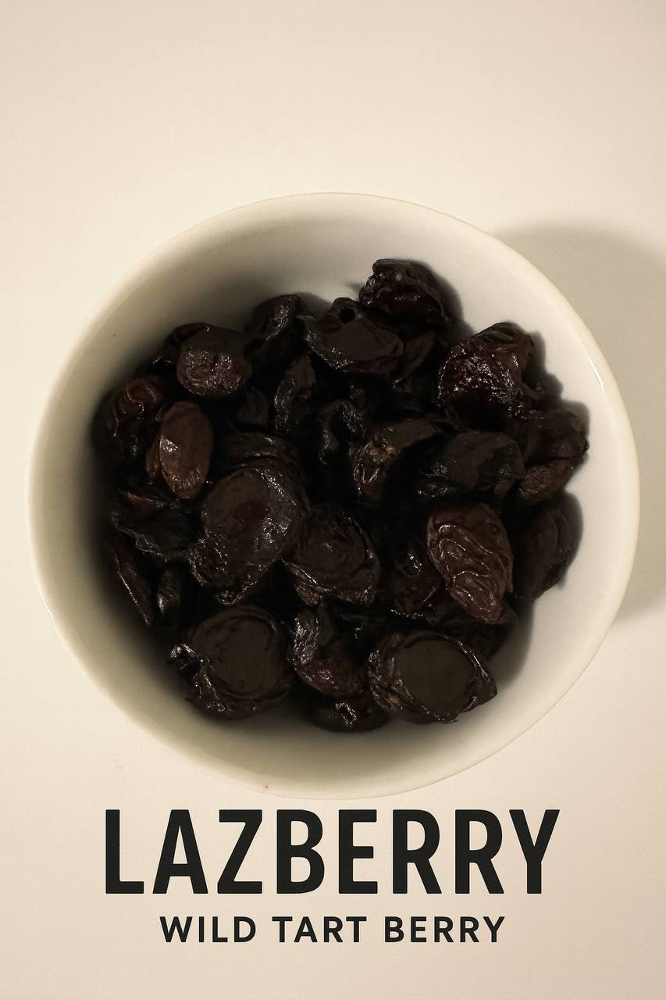

Lazberry (Karayemiş) • 100g
Naturally dried, tart and aromatic. Handpicked from Eastern Black Sea hills.
Buy on EtsySmall-batch organic delicacies. Handpicked, minimally processed, beautifully packed.
Shop on EtsyLazberry (Karayemiş), Dried Bilberry, Bilberry Jam and our limited Luxury White Tea.
Naturally dried, tart and aromatic. Handpicked from Eastern Black Sea hills.
Buy on EtsyWild bilberries (Vaccinium myrtillus). Intense flavor, traditionally dried.
Buy on EtsyTraditional recipe. Freshly prepared with wild bilberries and minimal sugar.
Buy on EtsyHand-harvested, delicate and antioxidant-rich. A ritual of renewal.
Buy on Etsy
Small-batch, naturally processed product from the Black Sea region.
Buy on EtsyWe craft small-batch organic delicacies from the misty slopes of the Black Sea mountains. Handpicked, minimally processed and beautifully packed. Discover Lazberry (Karayemiş), wild bilberries and our limited white tea collection.